2026 Epic AI MegaJam · theme: Director's Cut · Unreal Engine 5.8
A production diary. Four days, six thrown-away ideas (the last of them eight hours before the deadline), one valley, and a build loop in which an AI agent wrote the code and judged its own stills before we ever pressed Play.
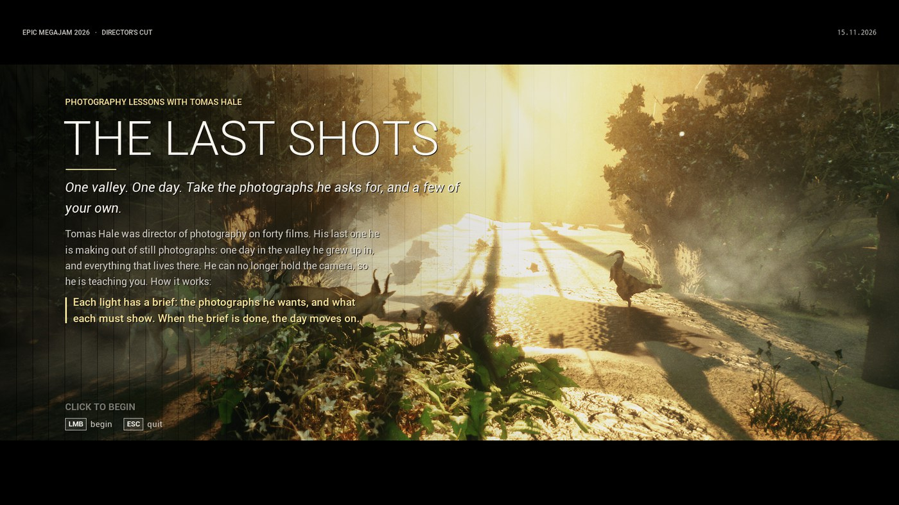
It is a nature photography game. Tomas Hale, a director of photography with forty films behind him, is making his last one out of still photographs: one day in the valley he grew up in. He can no longer hold the camera, so he teaches you. The day has four lights (high noon, the golden hour, moonrise, first light after rain), and each is a lesson with a brief.
A brief is a list of photographs, each with conditions: a crow in the air, the barn owl when the moon is out, a springbok when the wind drops, the meerkat on a long lens, the bat-eared fox at night, the heron in flight (walk too close and it goes up). Fill the frame with the animal while the conditions hold, and click. Everything else in the valley is yours to photograph, on any of six film stocks. When the brief is done the day moves on, and the game ends on a slideshow of your roll.
That is not the game we set out to make. For three and a half days it was a film about a sword, joined by match cuts. The diary below keeps that history, because the turn at the end is the most useful part of it.
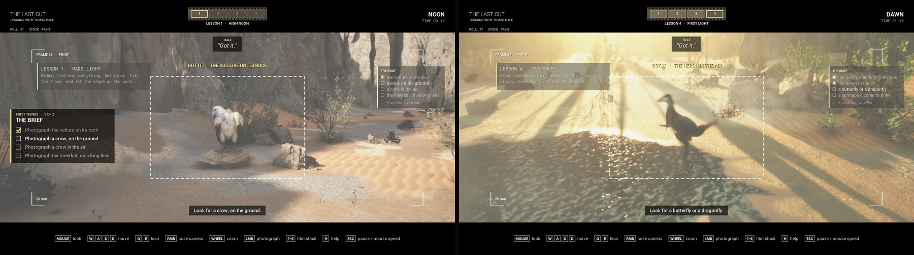
We directed; an AI coding agent (Claude Code) did almost all of the building. That only works if the agent can check its own work, so most of the first two days went into giving it eyes.
-ProtoDemo, the game plays itself from title to credits using the same inputs a player has, saves a still at each step and logs the result. If a change breaks the film, the run says so.-LookDev stages every shot from fixed angles with the HUD off. Each round of stills is filed under a label, so any two builds can be compared side by side.The first idea was Shadow Play: move a lamp so the shadows of paper cards become platforms. It worked, and we rejected it the same day. It was a platformer with a gimmick, and shadow platforming has been done.
Shadow Show was better: a script calls for "a bird", and you hold paper hands and household objects up to a lamp until their combined shadow is close enough, at which point it comes alive. We polished one act of it in a paper toy theatre style. A third prototype, Out of Shot, had you sneaking across a set without being caught by the cameras. A fourth idea, cutting pieces out of a paper stage, never left the notebook.
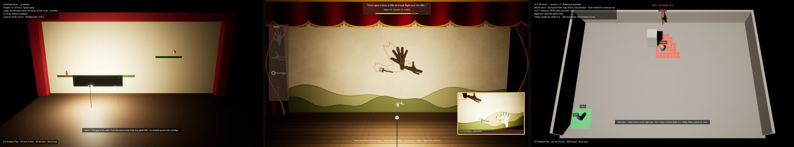
The idea that stuck came from asking what "Director's Cut" literally is: a cut. In a match cut, a shape in one shot becomes the same shape in the next. So: a first-person film camera, a ring in the viewfinder, and a cut that carries you to another place where the same shape sits in the same spot on screen.
The first demo cut from the sun over a canyon to a round hole in a cave wall. The first piece of feedback was that staring at the sun to frame it was unpleasant, so the sun became a round window in a sandstone fin. The cut worked, and it was the first prototype we wanted to keep playing.
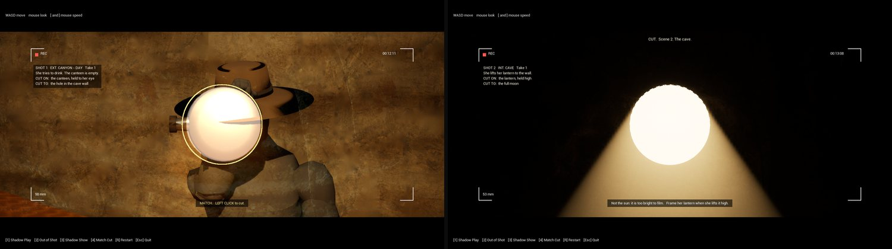
The match cut needed a reason, so the player became a camera operator on a film set. We wrote "The Last Drop", five shots about a woman looking for water, with an animated mannequin as the actress. It ran end to end the same day, and it looked like a jam game with a mannequin in it. Humans are hard to animate convincingly in four days.
That became a sword: cooling in a block at a forge, hung on a chain to drip, thrown across a canyon, planted on a battlefield at dusk, rusting under the moon years on, and found one morning with a vine grown round it. The water film stayed in the project as a fallback for a day and was then archived.
The rest of the day was making the cut a game. Playtests drove nearly all of it:
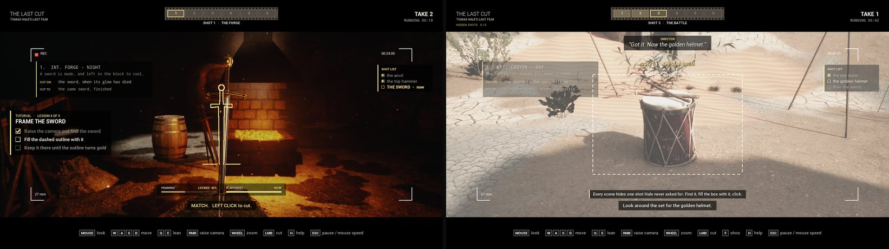
We picked a look and wrote it down so the agent could hold to it: cinematic realism, the sword the brightest thing in every frame, and one colour per shot telling the sword's life from hot to cold to alive. Molten orange, smoky amber, bleached noon, blood red, blue silver, green gold.
Then the loop ran. Shoot 18 stills, have the two critics read them, fix, shoot again. Twenty-six labelled rounds between mid-afternoon and evening. The critics caught things we would have shipped: a point light burning out the wall behind the fire, backlit plants reading as dark shapes, plain blocks still standing in for props.
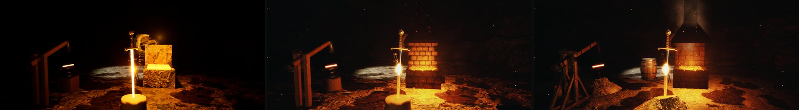
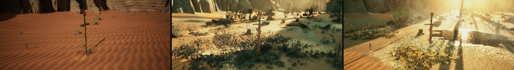
The film stock is a chain of small things: a print-film colour table, grain, a gate that weaves by about a pixel, halation round the highlights, oval bokeh. We built six stocks and compared them on the same frames before choosing "Print".
The story arrived the same day. The director got a name and a voice: Tomas Hale, forty films in, shooting the one he never dared. He says one line per shot, reacts to your cuts, and at the premiere tells you what the audience made of it. All voice, sound effects and music were generated with ElevenLabs and imported by script, 48 files in all.
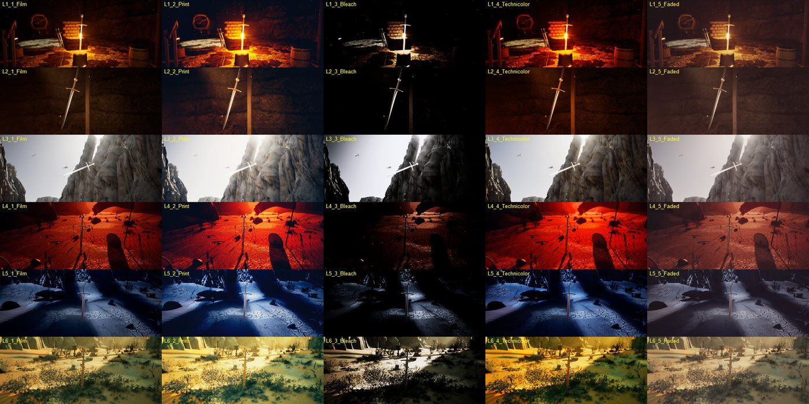
A playtest produced a list. Testers did not know what an "insert" was, so the game says "close-up". They could not tell which of nine shields was wanted, so each shot list now names things there is only one of. Mouse speed is personal, so the pause screen has a slider. A slow dissolve we were proud of was judged too slow and switched off.
We also added one bird hidden in every shot that Hale never asked for. Frame it and it goes into the premiere.
The afternoon was a realism pass, run the same way as the look pass. The agent audited stills of every shot and listed the weakest things: a vulture that read as a toy eagle, perches made of boxes and cylinders, a flat brick hearth, a drum built from six cylinders.
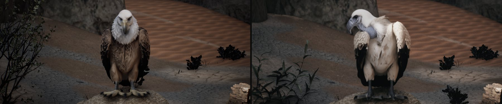
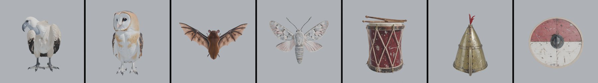
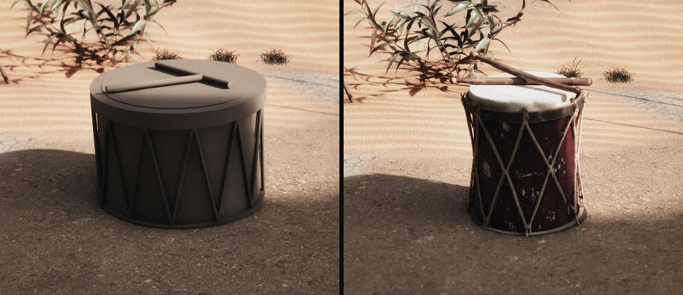
One more playtest, hours before the deadline, found three bugs and one design problem. The bugs were ordinary: a tool chest hung 36 cm above the cave floor (its height was measured at one spot and it was placed at another), two ravens stood inside each other on the sword's hilt (every crow was sent to the same point), and they held their wings half open (the rig's stock idle clip does that).
The design problem was the premiere. Replaying clips of your own camera moves produced "a bunch of random shots". The idea that replaced it came out of that conversation, not out of a plan:
What made this possible in an afternoon was that the pieces were already data. The premiere recorded frames as camera plus set state, so a photograph was one frame of something we had. The stocks were a table. The autopilot only needed to learn to take a picture of its own in each scene and to walk over to the pool.
With photographs and living animals in, the sword was the least interesting thing on screen. The last call of the jam, with eight hours left: make it a real nature photography game. Change the scenes, drop the sword, let the valley be the subject.
It took about two hours to stand up, and only because of how the project was built:
Then the springbok cost an hour. In the engine its coat came out blotched like camouflage. We blamed the texture, and were wrong four times: the reduced mesh, the texture's mipmaps, the normal map and the shadows each got a fix that changed nothing. What ended it was two test materials. With lighting switched off the coat was perfect, so the texture was innocent. With the surface normal shown as a colour the animal was covered in black patches: Unreal had recomputed the mesh's normals on import and got whole patches wrong. Importing the normals from the file fixed the springbok, and the heron, which had the same fault more quietly.
The first springbok was generated from a sentence, and it showed: the horns were wrong and the flank band wandered. While one agent session fixed the build, a second one redid the cast properly, in parallel:
Adding an animal to the game is one line in a table (model, clips, height, which lights it is out in, how fast it walks) and one line in a brief.
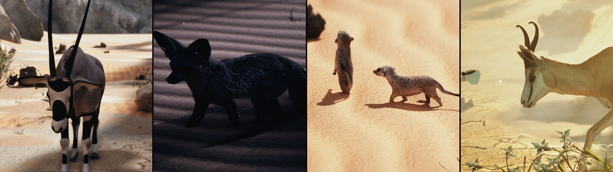
The second session kept going while the build was being tested: an ostrich, a pale chanting goshawk, a malachite sunbird and a Cape hare, made the same way. Putting them in took 35 minutes, and most of that was deciding where each one belongs.
Four lines in the animals' table, four lines in the briefs: 22 photographs asked for now, across the four lights.
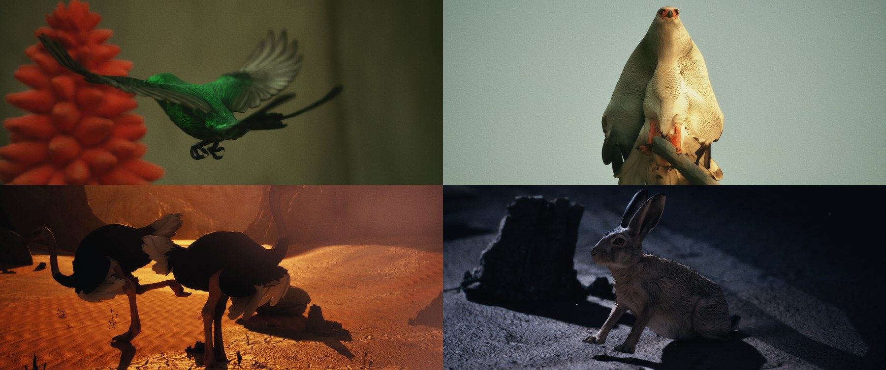
At twenty past ten, four and a half hours before the deadline, that message arrived, and it was fair. The game had become a nature photography game, but it was still played in the sword film's desert canyon: the same sand under four different lights. New animals had been easier to add than a new place, so that is what had been added.
The fix kept the one thing that could not move, the footprint the animals walk on, and replaced everything standing on it:
Almost everything is Poly Haven (CC0): fifteen more models and seven ground scans, fetched and imported by two short scripts. Poly Haven has no reeds and no tall dry grass, so the second session built those two in Blender from painted cards while the first one planted the rest. In code a scene is a column in a table: each line of plants says which lights it stands in, and each light has its own ground material built from three scans.
Two things went wrong on the way. The first stills ran at 10 frames a second, which looked like the new grass until the old planting was run for comparison and was just as slow: another game had the graphics card. And the golden grass came out black, because a grass scan has no translucency and the sun was behind it. Lifting its colour did nothing (five times nothing is nothing); a little light of its own did, once the first attempt, which turned the valley into yellow paper, was cut to a quarter.
The last one was the kind that ships if nobody looks. One still came back full of dark shards: a tree's leaves drawn as solid triangles. The script that points the plants' materials at the project's own alpha-masked parents had been reporting "re-parented 53 instances" all day and saving none of them, because it only saved packages the editor considered changed, and run headless it did not consider them changed. On disk every plant in the game still used the engine's translucent material. A version that forces the save fixed the leaves, and the frame rate with them: thousands of clumps of translucent grass became thousands of clumps of masked grass.
And the game got a new name in the same hour. It is not about a sword's last cut any more. It is The Last Shots.
The last change before the freeze came from the other session, and it is the one that makes the briefs worth waiting for. The animals got routines, and five of the briefs now ask for a moment instead of a portrait: a springbok pronking, a meerkat on sentry duty, the gemsbok tossing its horns, the bat-eared fox digging, the hare sitting up. Each moment has a tell a second or two before it (the springbok goes head up and stock-still), so the picture can be learned, not just lucked into. Like everything else in the valley it runs off the film's clock, so the slideshow can stage the same leap again.
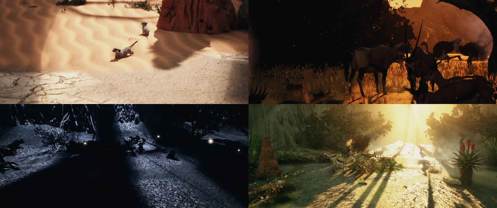
Twenty to midnight: "some of the animals have horrible animations ... just remove those animals." Five went: the springbok, the gemsbok, the ostrich, the jackal and the bat-eared fox. Their stock walking and trotting clips had passed every still and failed in motion, and a still is all an agent looks at unless it makes itself look at more. The valley kept the animals that move well because they barely move from their place: the meerkats, the hare, the agama, the birds. The briefs were rewritten round them and three of Hale's lines recorded again.
Then, with three hours left: rivers, lakes and waterfalls. There is no terrain to carve, only a level floor, so the water is a hand deep and has to look deeper than it is:
The last hour went on three more requests. The golden-hour pool had to show the sky: a mirror-type surface came out black, because nothing in this world's sky is there for a reflection ray to find, and then, carrying the sky's colour itself, as flat as coloured paper. What shipped is the first water shader with a little of each light's sky added by viewing angle. Every plant now sways a little. And the sky got Unreal's volumetric clouds, which took four lines of code and worked the first time, the only thing all night that did.
It is the roughest part of the game, finished an hour before the deadline, and the golden-hour pool is weaker than the others. The lake at first light, with the heron standing in it, is the picture the whole change was for.
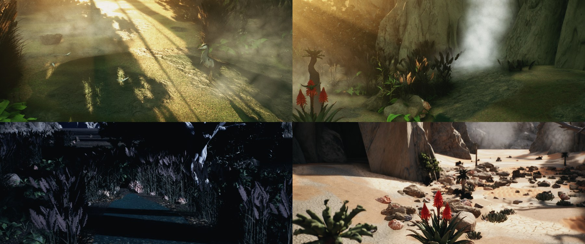
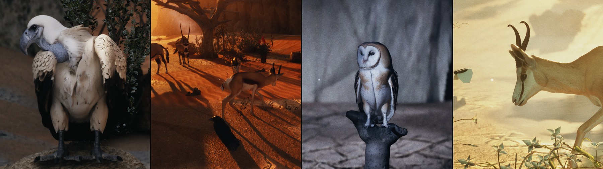
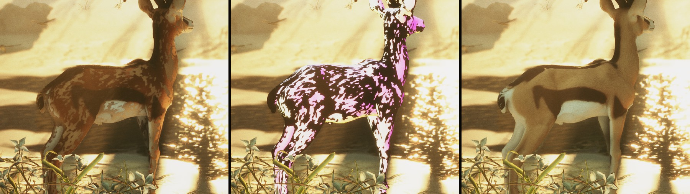
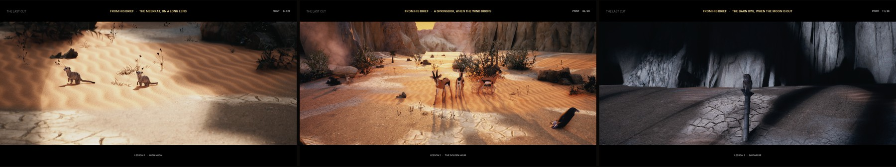
Most of the lost time was not design. It was the gap between what a tool says it did and what ended up on screen. These are the ones worth knowing if you build this way.
| What we saw | What it was |
|---|---|
| Plants rendered as grey mirrors | The glTF import wired a greyscale roughness map into the metal channel. Setting the material's metallic factor to zero fixed it. |
| Leaves drawn as solid shards | The scans' leaf materials are alpha-blended, and Nanite cannot draw translucent materials. Switching the shared parent to alpha-masked gave the outlines back. |
| Foliage dark in the packaged game only | Material instances were parented to engine plugin content without the Nanite usage flag, so the build fell back to the default material. We copied the parents into the project. |
| A rigged crow that was invisible | Its bones were in metres under a mesh in centimetres, so the skinned bird was a hundredth of its size. Re-exporting through Blender fixed the scale. |
| Imported props that looked crude | The importer turned Nanite on and left a rough fallback mesh. Our import scripts now switch it off for small props. |
| HUD text that drew nothing | Canvas text with a Slate font needs a real font object behind it. The UI kit wraps one at start-up. |
| A highlight that hid the thing it marked | The glow on shot-list props had a flat fill that washed their colours out. It is now almost all rim. |
| Animals blotched like camouflage under a low sun | Not the texture. Unreal recomputed the meshes' normals on import and got patches of them wrong. Importing the file's own normals fixed it. An unlit test material would have told us in five minutes. |
| A meerkat that tore when it walked | The generated model has skin joining its forelegs, and the walk clip pulls it into a sheet. It now keeps to its post, as meerkat sentries do. |
| Builds refusing to start | Any other open Unreal window blocks the compiler with "Live Coding is active". One flag gets past it, when that window has a different project. |
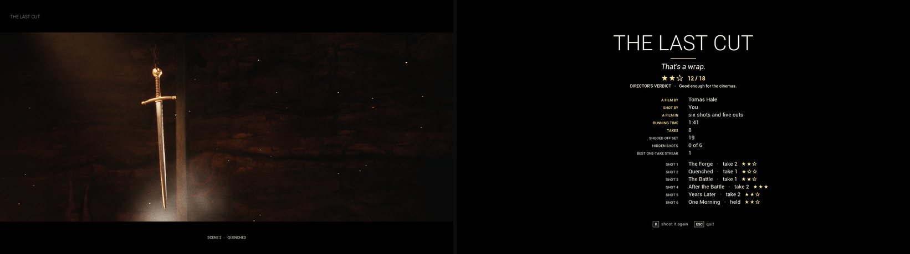
The full list of third-party assets is in the project's CREDITS file.